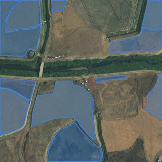
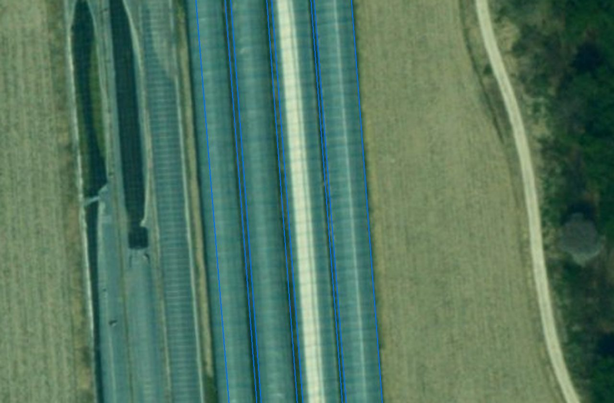
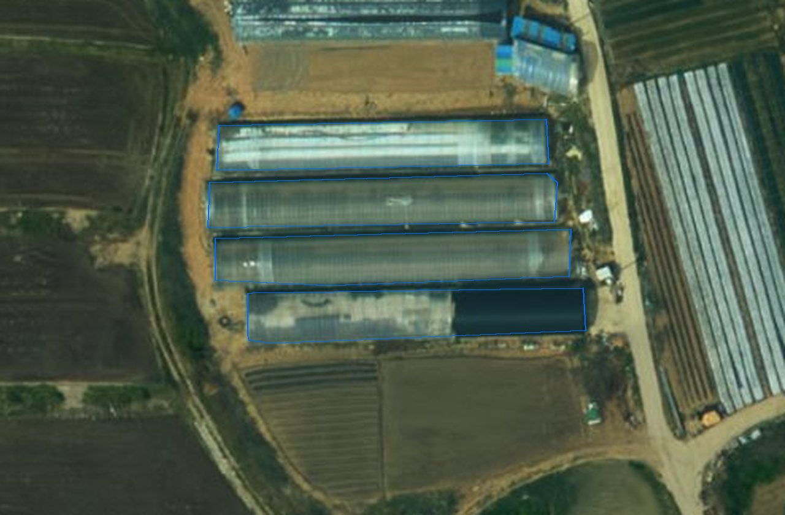

프로젝트
비닐하우스 2026
고치기끝난 프로젝트로 보관프로젝트장LX 직원test@lx.or.kr넘기기
구성원없음더하기
새 서비스를 만드는 6단계
칸을 누르면 그 단계로
데이터 올리기 영상 · 3곳 모두 있음2023 항공 2 · 2025 드론 1
학습데이터 구축
영상 · 3곳 모두 있음2023 항공 2 · 2025 드론 1
학습데이터 구축

 학습 표본 200장쓸 수 있음
학습
학습 표본 200장쓸 수 있음
학습 시범비닐하우스 서비스1.0판 · 공개됨
6서비스 관리
시범비닐하우스 서비스1.0판 · 공개됨
6서비스 관리 지금 여기시범 3곳적용 · 시범 3곳운영 0
지금 여기시범 3곳적용 · 시범 3곳운영 0

1차쓸 수 있음
1차 모델등록 승인 09.30
4결과 확인할 일
표본 확인 0/20아직 확인 전
발행 요청시범지금 여기시범 3곳
4
1단계 6 = 그림 6칸. 끝난 칸은 검정 ✓, 남은 칸은 빨강, 지금은 파랑 '지금 여기'. 칸을 누르면 그 단계 화면
2다음 할 일은 띠 바로 아래 한 줄 — 어느 단계로 가서 무엇을 하는지 + 버튼 하나
다음 할 일 — 4단계 결과 확인: 표본 20건을 보고 맞음 · 틀림을 표시합니다6단계 서비스 관리 단계이지만 4단계 가 비어 있어 '현장 확인 필요' 필지 수가 아직 서지 않습니다
결과 확인 열기지역 · 결과 장면
3곳 모두 AI 결과 있음 · 현장 확인 전XI맵에서 결과 보기- 증평군2023 항공영상 · 시범
- 함양군2023 항공영상 · 시범
- 남원시2025 드론영상 · 시범


재학습
마지막 학습 뒤 1일표본
200장9.30
200장9.30
학습
끝9.30
끝9.30
모델
승인9.30
승인9.30
프로젝트
만듦10.1
만듦10.1
지금
10.1
10.1
검토 요청 0건새 영상 없음결과 확인 0/20
다시 학습할
근거가 적습니다
기록 · 메모
모두 보기 7- 10.01 08:58프로젝트 만듦LX 직원
- 09.30 15:35모델 등록 승인LX 관리자
- 09.30 15:33학습 끝 · 2번째LX 직원